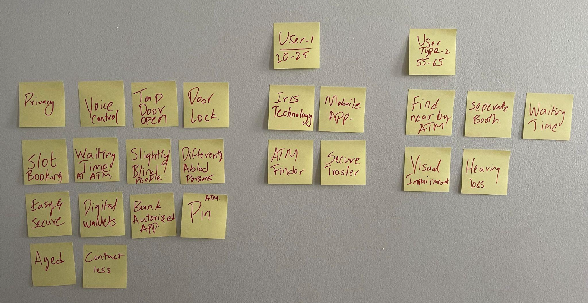
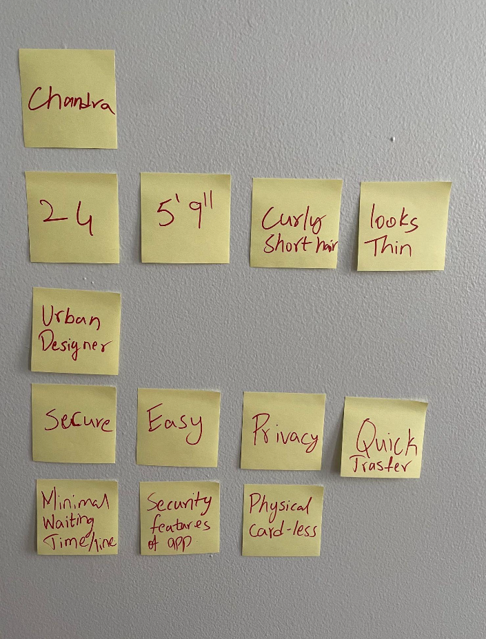
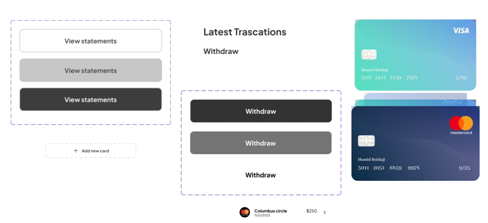
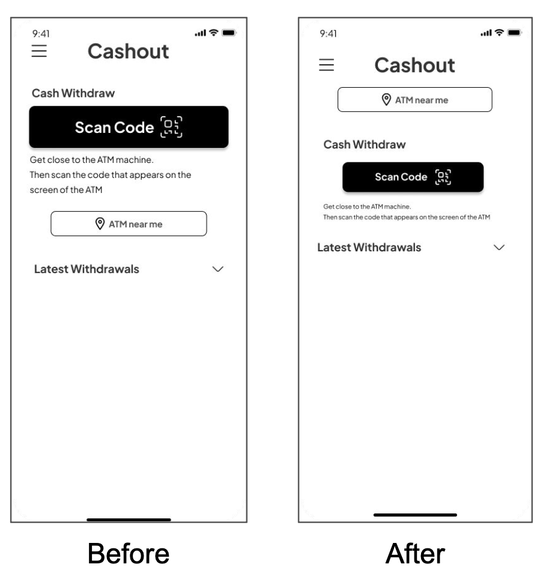

Cash App
The Seamless ATM project addresses hygiene, security, and privacy concerns for ATM users. By creating a touch-free cash withdrawal system, people can access funds without physical contact. The project also focuses on decreasing wait times, enhancing personalized security features, and promoting privacy.
Project Type:
UX Research
Information Architecture
UX design
Role:
UX Designer/Researcher
Project Time:
2 weeks
Project Members:
Solo Project
Project Background
While observing an ATM in Columbus Circle, we found an unsanitary environment and security risks due to a homeless individual nearby. Users were hesitant to utilize the ATM, fearing their personal information and privacy could be jeopardized.
Aims
- Develop a touch-free cash withdrawal solution
- Ensure the system is user-friendly and secure
Key Objectives
- Create a touch-free cash withdrawal method
- Eliminate paper waste from ATMs
- Introduce entry access systems to deter unauthorized users
- Integrate self-cleaning surfaces for machines
- Minimize touchpoints using automatic doors
- Establish an alternative to traditional ATM usage
Target Users
- Frequent ATM users
- Technology-focused millennials
- Travelers
Design Methodology
The design process took place during a Design Sprint, encompassing understanding user needs, defining challenges, deciding on solutions, prototyping, and user testing.
Design Aesthetics
The user interface should be visually appealing and professional, with easy-to-follow instructions and graphics. It should accommodate users with impairments and display clear, legible controls.
User Evaluation
Users tested a prototype app, and feedback was generally positive. Participants could complete all tasks, such as initiating the cash withdrawal process and finishing the touch-free cash withdrawal.
User Journey
The steps to withdraw money using the mobile app include:
- Launching the mobile app
- Scanning the QR code displayed on the ATM screen
- Selecting the card and amount to withdraw
- Confirming the total amount on the checkout page
- Authenticating the transaction with facial recognition or fingerprint scanning
- Collecting the cash from the ATM dispenser
- Receiving a digital receipt on the app
Competition
- Online payment transfer systems with minimal transaction costs (eg: ZELLE)
- Physical ATM cards
Opportunity
- Due to several security precautions, many people these days are unlikely to carry a physical card, and we can use ATM services without necessarily having the physical card.
- The mobile cash app functions identically to a debit/credit card when withdrawing cash.
SWOT Analysis
Strengths
The global Contactless ATM (Cardless ATM) Market is anticipated to reach a substantial size between 2021 and 2030.
Weaknesses
To obtain Sales, Revenue, and Price Analysis by Type and Industry Application for the Company.
Opportunities
It is projected that the market will continue to expand beyond the projection period as leading market participants increasingly implement strategies.
Threats
How is it that the Contactless ATM (Cardless ATM) industry is unaffected by the current trend of digitization, which affects every area of our lives?
MoSCoW Analysis
Must have
Contact less,Easy,Secure.
Should have
Privacy.
Could have
No / minimal waiting time at ATM,Personal/customized security features
Would have
Voice control
Design Tone
Contactless ATMs let consumers withdraw money without a debit card. The user may access their money with a
smartphone or a contactless payment card. This may make accessing money easier and safer.
The user interface should include straightforward instructions and images.
The machine should be
accessible
to those with impairments and have clear, visible controls.
Design should be professional and trustworthy to generate client confidence in the machine and the
financial organization it represents.
Product Concept
Contactless ATMs enable consumers to perform transactions without presenting their bank card.
Near field communication (NFC) enables close-by devices to communicate.
A contactless ATM lets consumers touch their card or phone to conduct a transaction. This may speed up and
simplify ATM usage.
Using a contactless ATM may be risky since bank information may be stolen without the user's awareness.
Business and User Needs
Contactless ATMs help consumers and companies. Users may save time and convenience by accessing money without
a
debit card.
It may add security since the user doesn't have to worry about losing or stealing their card.
Businesses may attract more consumers and enhance customer satisfaction by introducing contactless ATMs.
Contactless payments are more secure than standard card payments, reducing the possibility of fraud and other
security concerns.
Contactless ATMs can help firms compete in a constantly changing financial world.
Mind Mapping
User Interview Questions
- What obstacles do you encounter with the existing method of cash withdrawal from an ATM?
- Are you comfortable using payment cards or mobile applications?
- Privacy at the ATM?
User Persona
User Testing Tasks
- Task 1:
Take as much time as you need to use a prototype app that will allow us to withdraw cash without touching
anything inside the ATM.
Could you kindly test the prototype and answer a few questions that would aid my research? - Task 2: you Able to find the way to start the cash withdraw process
- Task 3: Do you think Latest Withdrawal's in the home page will be useful
- Task 4: Now please explore the App And show me how you finish the Contactless cash withdrawal process using the prototype
User Flow
A list of steps for withdrawing money from an ATM using a mobile app.
These steps outline the process of using a mobile app to initiate a cash withdrawal at an ATM, which typically involves scanning a QR code on the ATM screen, selecting the card and amount to withdraw, and completing a security check such as facial recognition or fingerprint scanning.
To summarize, the process involves:
- Opening the mobile app
- Scanning the QR code on the ATM screen.
- Selecting the card and amount to withdraw.
- The total amount will be shown on the checkout page, along with a request for confirmation.
- Face lock or fingerprint verification will authorize the transaction.
- The transaction will complete once the user take the money off from the ATM.
UI Components
Layout Design
The app's landing page is shown in the images below both before and after the Testing.
